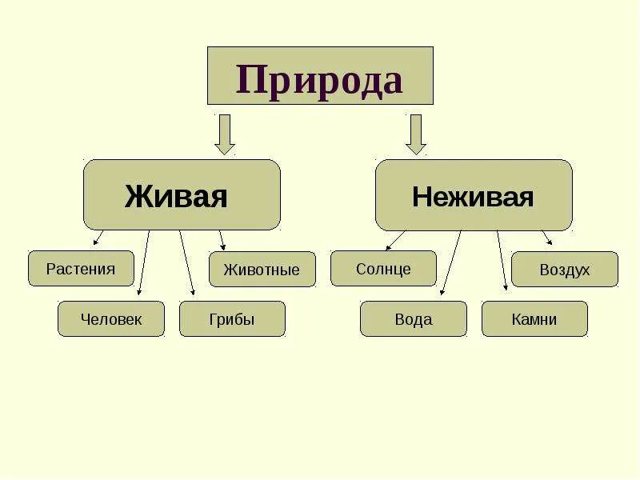
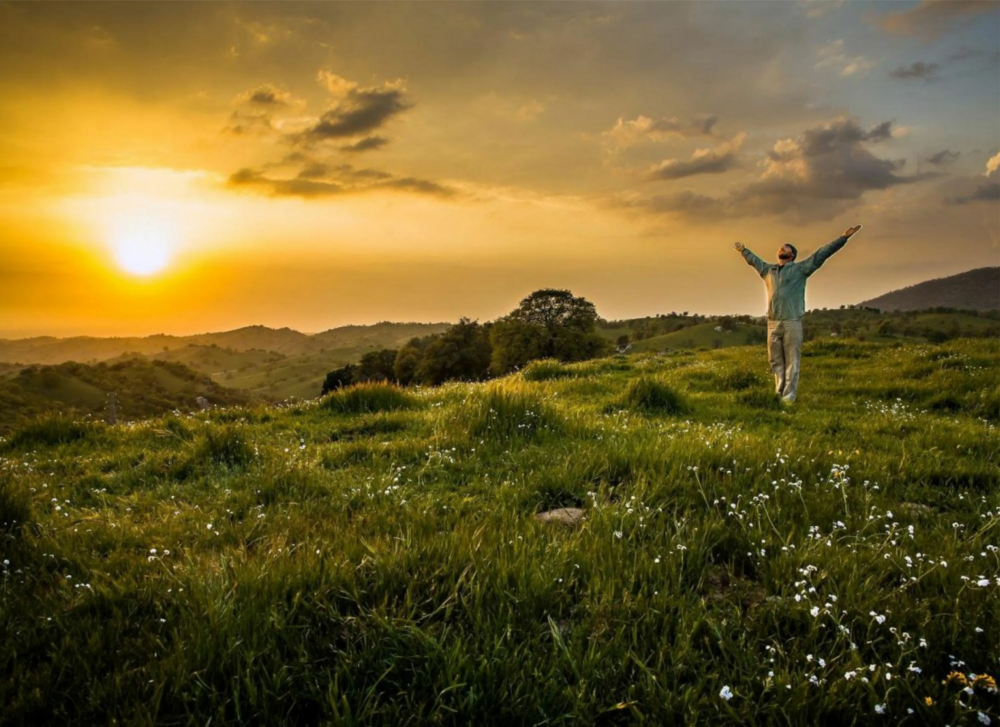

Что такое природа?
Природа — это всё, что нас окружает и не создано человеком. Это леса, горы, океаны, животные, растения, камни, воздух и вода. Природа существовала задолго до появления людей и будет существовать после нас.

Разделы природы

1. Живая природа
Всё, что рождается, дышит, питается, растёт и умирает:
- Животные — звери, птицы, рыбы, насекомые
- Растения — деревья, цветы, травы, кустарники
- Грибы — самостоятельное царство природы
- Микроорганизмы — бактерии, вирусы (невидимые глазу)
2. Неживая природа
Всё, что не дышит, не питается и не размножается:
- Вода — океаны, моря, реки, озёра, дождь, снег
- Воздух — атмосфера, ветер, облака
- Земля — почва, камни, горы, равнины, пески
- Космос — Солнце, звёзды, планеты
Значение природы для человека

- Дыхание — природа даёт кислород
- Пища — растения и животные кормят нас
- Вода — без воды нет жизни
- Материалы — древесина, камень для строительства
- Красота — природа радует глаз и успокаивает
- Здоровье — чистый воздух, целебные травы